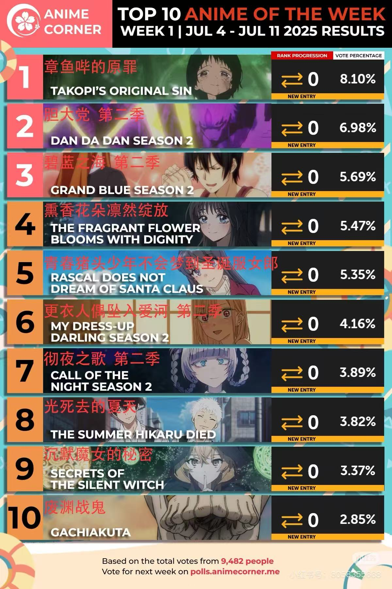

2025 Summer Anime Picks
What’s hot this season?
Each anime season brings exciting new shows to discover. Here are some standout titles from the 2025 summer lineup that you shouldn’t miss!
- Takopi's Original Sin – A surprising hit exploring dark emotions through a cute alien's journey.
- Dan Da Dan Season 2 – High-energy supernatural battles with a comedic twist.
- Grand Blue Season 2 – The diving club returns with more hilarious (and shirtless) chaos.
- The Fragrant Flower Blooms with Dignity – A romantic drama that’s both poetic and emotional.
- Rascal Does Not Dream of Santa Claus – A heartwarming follow-up to the beloved Bunny Girl Senpai series.

- Seasonal anime
- Anime released according to Japan’s broadcasting seasons: winter, spring, summer, and fall.
- New release
- Brand-new shows premiering in the current anime season.